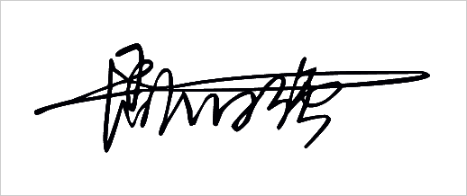

关于我
我啊，是个什么样的人呢？
我觉得我是一个很爱放弃，做事没有毅力和恒心，总是口头说说但是却又没有实际的人，做事情总是三天打鱼两天晒网。可以说我就是大部分人眼中的那种不上进，而且还无可救药的人吧。
我喜欢的东西很多，看书、看电影、骑个单车到处跑或者一个人沿着马路边漫无目的的走着。喜欢一个人到处看看我不曾见过的风景人物，喜欢一个人到处听听我不曾听闻的奇闻怪事，喜欢一个人。
很多时候我都喜欢找一个借口，找一个自己的心理安慰，告诉别人我之所以这么做是因为我不喜欢当前的状态。我从来没有想过让自己坚持一下，哪怕是三个月，两个月，一个月也好，都没有。我总是觉得不喜欢那就再换一个呗，多大的事。
我希望这一次，我可以试着告诉自己，坚持一下，哪怕是三个月，两个月，一个月也好。坚持一下，别这么轻易的就觉得自己不行。你忘记你在学校里面是什么样的一个情况吗，起初也是什么都不会，还要和学校的同学和老师沟通，后来慢慢的也熟悉了，也能够得心应手。所以啊，这一次也坚持一下，不要觉得自己不行，给自己一点时间。
从专升本失败后，我便总是用这个当作自己逃避的借口。逃避工作，逃避外出，逃避社交，把自己死死的看在家里。觉得住的地方就是最安全的堡垒。但是，总要出门啊，每次出门就像是奔赴战场一样，总是要背个包把自己伪装成学生的模样，告诉别人：“你看，我背着包的，我还是个学生。”
自欺欺人总会有结束的时候。每次当我看见马路上的学生，看见一些视频里面的学生，我都觉得自己很羡慕，羡慕他们这样的本科大学生活，我也想要。
所有人的时间都是同样的， 但是命运是自己选的。我希望我报名的自考可以顺利通过，然后到那个时候再问自己，还想学吗？还想进大学再学一次吗？如果想，那就再试一试，不过是一年的时间，给自己一个交代。因为，命运在自己手里，如果想要改变，而你恰好有选择的机会和权力那就不要害怕，勇敢痛快点去做就行了。
我还是个什么样的人呢？
我想我大概可能或许还是个假的文艺小伙子吧。我喜欢看书，不管是杂志、小说、美文还是别人写的随笔，都在我的阅读范围里面。有人说读书是对心灵的救赎，但是我觉得读书是让我感受和体验我这一辈子也不会经历的人生。
我希望有一天我可以成为一个写故事的人，一个可以让别人得到救赎和体验人生的写故事的人。
这就是我。
<未完待续……>
